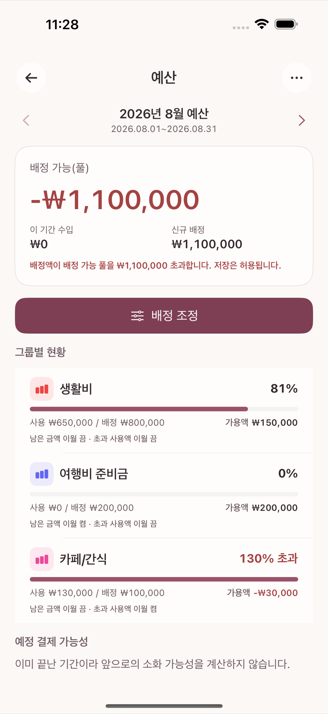
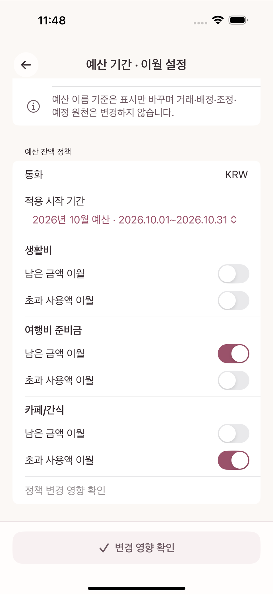
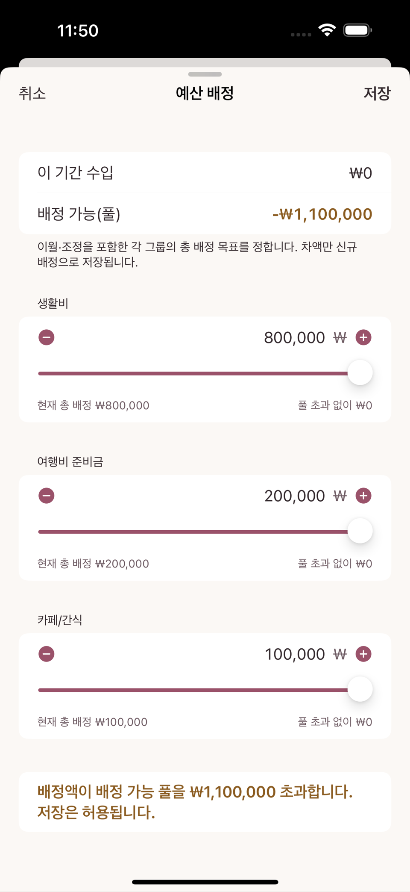
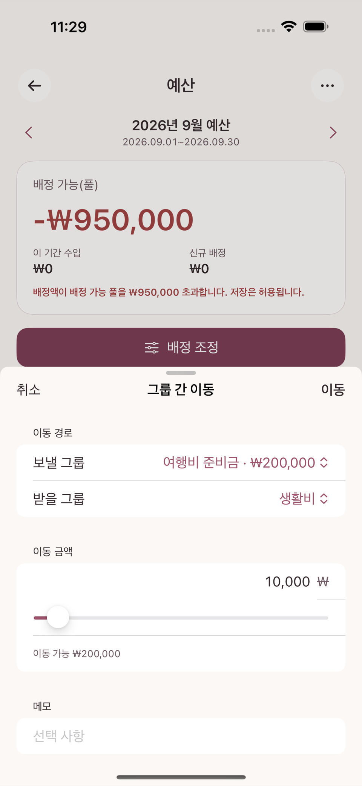

이 장은 처음부터 끝까지 하나의 가상 예제를 따라간다. 숫자는 전부 암산 가능한 만 원 단위이며, 실제 사용자 데이터가 아니다. 예제를 따라 하면서 "왜 예산은 계좌 잔액과 다르게 움직이는가"에 스스로 답할 수 있는 것이 목표다.
| 예산 묶음 | 이월 스위치 설정 | 8월 배정 | 8월 실제 사용 | 8월 말 남은 금액 |
|---|---|---|---|---|
| 생활비 | 둘 다 끔 (풀로 반환) | 800,000원 | 650,000원 | +150,000원 |
| 여행비 준비금 | 남은 금액 이월 켬 | 200,000원 | 0원 | +200,000원 |
| 카페/간식 | 초과 사용액 이월 켬 | 100,000원 | 130,000원 | -30,000원 |
8월 1일 시점 배정 가능(풀)이 1,100,000원이었고, 세 묶음에 정확히 800,000 + 200,000 + 100,000 = 1,100,000원을 배정해 풀은 0원이 됐다고 하자.
각 지출을 해당 카테고리로 입력하면 그 카테고리가 속한 예산 묶음의 사용액이 늘어난다.

이 시점에서 남은 금액이 음수인 카페/간식은 오류가 아니라 이번 달 예상보다 많이 썼다는 신호다. 계좌 잔액이 마이너스가 됐다는 뜻이 아니라, 그 카테고리에 정한 한도를 넘겼다는 뜻이다.
급여 3,000,000원을 은행 계좌 수입 거래로 입력한다. 이 순간 배정 가능(풀)이 3,000,000원 늘어난다. 8월 예산 기간은 이미 배정을 끝냈으므로 이 돈은 9월 예산을 위한 재원이 된다.
급여를 미리 배정하는 기능은 없다. 급여가 실제 거래로 기록된 뒤에만 그 금액을 배정할 수 있다. "이번 달 안에 받을 예정"이라는 이유만으로는 배정 가능액이 늘지 않는다.
각 예산 묶음에는 남은 금액의 부호마다 따로 켜고 끌 수 있는 이월 스위치 두 개가 있다 — 남은 금액 이월(양수일 때)과 초과 사용액 이월(음수일 때). 스위치를 켜면 그 부호의 금액을 같은 묶음에 남기고, 끄면 배정 가능(풀) 쪽으로 옮긴다. 이 예제의 세 묶음은 다음처럼 설정돼 있다.
| 예산 묶음 | 남은 금액 이월 | 초과 사용액 이월 | 8월 말 상태 | 9월 시작 시 묶음 잔액 | 풀에 생기는 변화 |
|---|---|---|---|---|---|
| 생활비 | 끔 | 끔 | +150,000원 (양수) | 0원 (리셋) | +150,000원 반환 |
| 여행비 준비금 | 켬 | — | +200,000원 (양수) | +200,000원 (유지) | 변화 없음 |
| 카페/간식 | — | 켬 | −30,000원 (음수) | −30,000원 (유지) | 변화 없음 |

두 스위치 조합 모두 돈이 생기거나 사라지지 않는다. 같은 금액이 "묶음 안"에 남을지, "풀로 돌아갈지"만 달라진다. 이 예제에서 9월 1일 풀은 다음과 같이 계산된다.
9월 1일 풀 = 8월 말 풀(0원) + 8월 급여(3,000,000원) + 생활비 반환분(150,000원)
= 3,150,000원예산 배정 화면에서 각 묶음에 이번 기간 쓰고 싶은 총액(목표)을 입력하면, 화면이 이미 이월된 금액을 고려해 실제로 저장할 신규 배정을 자동 계산해준다. 카페/간식처럼 이월이 음수인 묶음에서 이 차이가 분명히 드러난다.
| 예산 묶음 | 9월 이월 | 9월에 쓰고 싶은 목표 | 자동 계산된 신규 배정 | 풀 변화 |
|---|---|---|---|---|
| 생활비 | 0원 | 800,000원 | 800,000원 | −800,000원 |
| 여행비 준비금 | 200,000원 | 300,000원 | 100,000원 | −100,000원 |
| 카페/간식 | −30,000원 | 100,000원 | 130,000원 | −130,000원 |
카페/간식은 "9월에도 10만 원짜리 예산으로 쓰고 싶다"는 목표(100,000원)를 그대로 입력해도, 지난달 초과분 30,000원을 먼저 메워야 하므로 화면이 자동으로 신규 배정 130,000원을 계산해 저장한다. 사용자가 130,000원을 직접 암산해 입력할 필요는 없다.
9월 1일 풀 = 3,150,000 − 800,000 − 100,000 − 130,000 = 2,120,000원
예산 배정 화면 — 카페/간식 묶음의 이월 −30,000원과 목표 100,000원, 자동 계산된 신규 배정 130,000원
두 시점 모두에서 다음 항등식이 성립해야 한다.
전체 예산가치 = 배정 가능 풀 + 모든 예산 묶음의 남은 금액숫자가 정확히 같다. 마감과 재배정을 거치며 돈이 늘거나 준 것이 아니라 위치만 이동했다는 뜻이다.
예산 배정 화면은 각 예산 묶음 이름이 섹션 제목이고, 그 아래 −/+ 버튼과 슬라이더가 딸린 숫자 입력칸(별도 라벨 없이 금액만 입력)이 목표 배정액 필드다. 아래에서 설명하는 "그룹 간 이동"은 이 화면과 별개의 독립된 화면이다.
한 묶음에 너무 많이 배정했다면 풀을 거치지 않고 그룹 간 이동 화면에서 두 묶음 사이의 금액을 바로 옮길 수 있다. 이동 전후 두 묶음 금액의 합은 그대로 유지된다(합계 0 이동).
